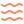
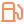
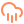
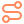

flint runs Coral scores, Bankr agents, GlyphBots, Voxels photos and live gas, plus a drum machine and something to breathe with. Eight apps on a 240x135 screen, no accounts and no keys. The one below is the real firmware.
Compiled to WebAssembly from the same sources the device builds from. The keyboard works.
1 to 8 open an app · the four tinted keys are the arrows · enter chooses · esc backs out of anything




| Board | Cardputer ADV, ESP32-S3FN8, 8MB flash, 320KB RAM |
| Screen | 240x135. Four lines of large text, eight small |
| Input | 56 keys over a TCA8418 |
| Extras | IMU, 1W speaker, mic, microSD, 1750mAh |
The desktop build takes its own screenshots, one per scripted key, so a change to a screen gets checked without anyone watching a window.
brew install sdl2 pio run -e sim -t exec -a --tour